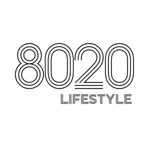
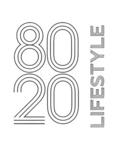

Trade Mark Journal No.2025/025 20 June 2025
UK00004213885 4 June 2025 (5)
Mark 1

Mark 2

- Class 5
- Fitness and endurance supplements; Dietary supplements promoting fitness and endurance; Vitamin supplements; Dietary supplements; Nutritional supplements; Herbal supplements; Probiotic supplements; Homeopathic supplements; Calcium supplements; Flaxseed dietary supplements; Chlorella dietary supplements; Anti-oxidant supplements; Protein supplements; Dietary supplements consisting of vitamins; Prebiotic supplements; Food supplements; Mineral dietary supplements; Zinc dietary supplements; Mineral nutritional supplements; Acai powder dietary supplements; Liquid dietary supplements; Dietary and nutritional supplements; Vitamin and mineral supplements; Protein dietary supplements; Liquid nutritional supplements; Linseed dietary supplements; Yeast dietary supplements; Liquid vitamin supplements; Enzyme dietary supplements; Anti-oxidant food supplements; Dietary food supplements; Liquid herbal supplements; Flaxseed oil dietary supplements; Wheat dietary supplements; Dietary supplements for humans; Pollen dietary supplements; Glucose dietary supplements; Vitamin and mineral food supplements; Protein powder dietary supplements; Dietary supplements in powder form; Mineral dietary supplements for humans; Whey protein dietary supplements; Food supplements for sportsmen; Nutritional supplements consisting primarily of magnesium; Dietary supplements consisting primarily of magnesium; Health-aid foods supplements containing ginseng; Soy protein dietary supplements; Vitamin supplement patches; Health food supplements made principally of vitamins; Vitamin preparations in the nature of food supplements; Soy isoflavone dietary supplements; Dietary supplement drinks; Nutritional supplements consisting of fungal extracts; Linseed oil dietary supplements; Brewer's yeast dietary supplements; Folic acid dietary supplements; Nutritional supplements consisting primarily of calcium; Dietary supplements consisting primarily of calcium; Nutritional supplements consisting primarily of zinc; Dietary supplements for controlling cholesterol; Nutritional supplements consisting primarily of iron; Dietary supplements and dietetic preparations containing CBD oil; Dietary supplements consisting primarily of iron; Nutritional supplement energy bars; Multivitamins; Dietary supplement drink mixes; Ganoderma lucidum spore powder dietary supplements; Activated charcoal dietary supplements; Food supplements in liquid form; Protein supplement shakes; Wheat germ dietary supplements; Ground flaxseed fiber for use as a dietary supplement; Royal jelly dietary supplements; Pine pollen dietary supplements; Diet capsules; Health food supplements for persons with special dietary requirements; Food supplements consisting of amino acids; Nutritional supplement meal replacement bars for boosting energy; Powdered nutritional supplement drink mix; Dietary supplements for human beings; Health-aid foods supplement containing red ginseng; Nutritional supplements made of starch adapted for medical use; Food supplements consisting of trace elements; Powdered nutritional supplement energy drink mix; Powdered fruit-flavored dietary supplement drink mix; Antioxidant pills; Dietary supplemental drinks; Vitamin tablets.
8020LIFE&STYLE LTD